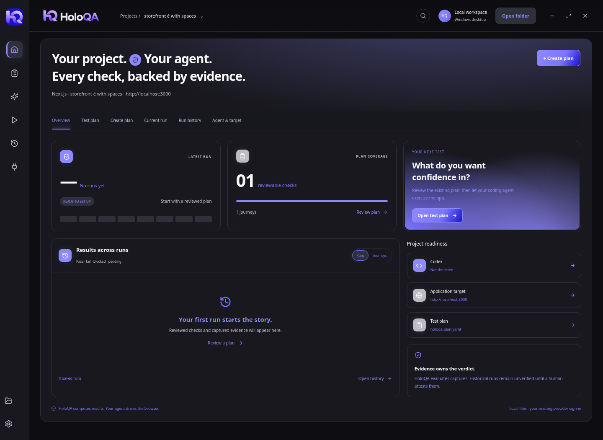

The result comes
with its reasoning.
Inspect the captured artifacts, assertion details, and integrity status behind your checks. Export a report from the engine.
Reviewed planCaptured evidenceEngine decision
Turn your project folder into a QA workspace. Draft a plan with Codex, Claude Code, or OpenCode; run supervised scans with Codex or Claude Code; inspect the evidence behind every result.
Download for WindowsFree & MIT licensed · Unsigned preview
See how it works
No project import. No new provider account.
Start where your code already lives.
HoloQA discovers plans without running your project scripts.
Review the entire plan and its target. An edit requires a fresh review.
http://localhost:3000Use your existing Codex sign-in. Command requests come back to you.
curl -I http://localhost:3000Example command request. No persistent permission is granted.
HoloQA evaluates captured evidence. Your agent cannot write its own PASS.
Inspect the captured artifacts, assertion details, and integrity status behind your checks. Export a report from the engine.
Interrupt Codex, inspect what happened, then continue with the same browser, pinned plan, and evidence owner.
Resume within the same live desktop session.Plans and saved runs stay in your project. Keep earlier runs when you retest and inspect their evidence with its integrity status.
holoqa.plan.yamlYour plan.holoqa/Runs · captures · reportsMeet the Silver Editorial character: a visual guide to HoloQA’s evidence-first approach. Your project, your agent, and clear proof behind every check.
Explore the workflowInstall the desktop, connect Codex CLI or Claude Code, and give your application a plan worth checking.
Get HoloQA for Windows# Sign in to either installed coding agent
codex login # or: claude
# Install the QA browser driver & runtime
npm install -g agent-browser
agent-browser installCodex protocol baseline: 0.159.2. Python engine included in the installer.
The details that matter for
your first run.
The desktop preview supports Codex CLI and Claude Code. Each uses its existing sign-in; Codex uses the supervised app-server adapter, while Claude can access only HoloQA’s named evidence tools. HoloQA does not copy credentials into the app. The underlying HoloQA engine also provides CLI, MCP, and TUI workflows; see the repository guide.
A Windows x64 machine, WebView2, either a supported Codex CLI or Claude Code sign-in, and agent-browser with its browser runtime. You start the target application yourself. The installer bundles the Python engine, so a separate Python installation is not required. WebView2 setup may need internet access.
Your plans, captured evidence, and run history live in the local project. The selected provider receives prompts and project context. Local storage does not mean local model inference. HoloQA uses your existing provider authentication rather than copying credentials into the app.
HoloQA waits for provider interruption and the current QA tool to finish before showing Paused. Resume retains the same live browser, run, and evidence owner. The application may change while paused, and the 30-minute session limit includes pauses. Closing or restarting the desktop does not restore an active run.
This is an unsigned development preview. Automated Windows engine, UI, executable, and installer checks have passed, but interactive Windows acceptance with a real provider/browser session remains outstanding. Signing, automatic updates, and restart recovery are not included. Review the release notes before installing.
Yes. HoloQA is MIT licensed. Explore the source on GitHub, read the desktop guide, or open an issue with a reproducible problem. Evidence-backed QA should be inspectable, including the tool that evaluates it.